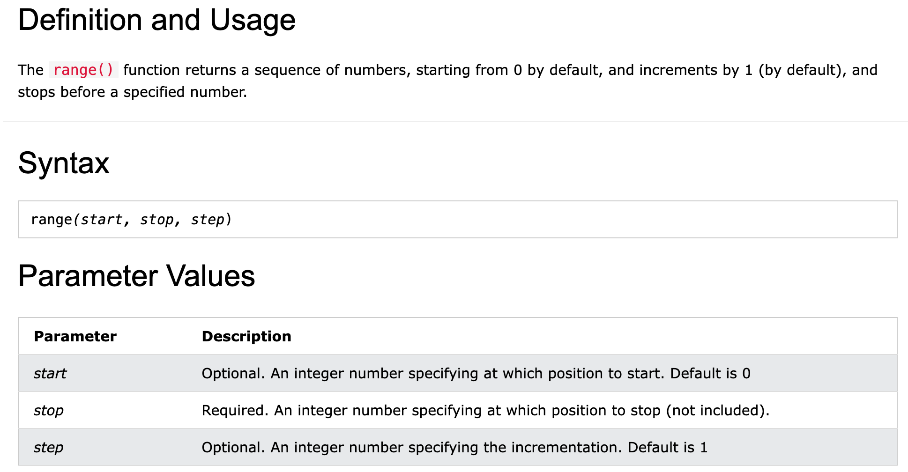
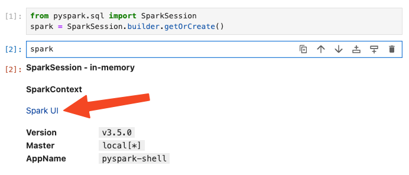
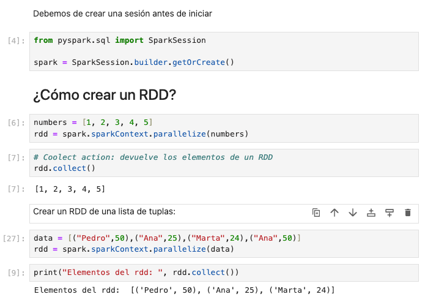
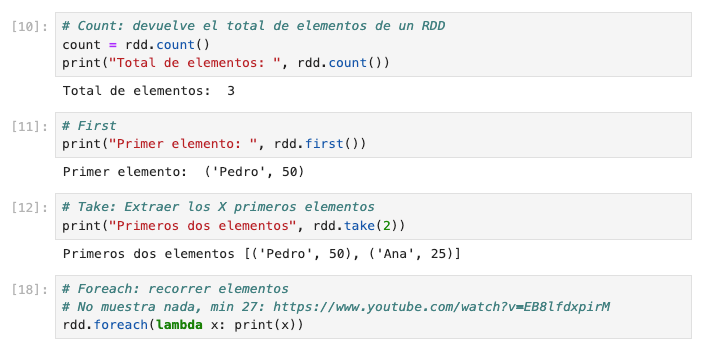
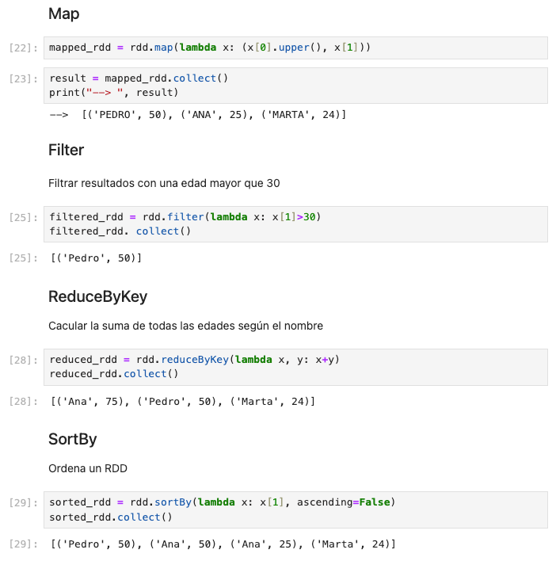
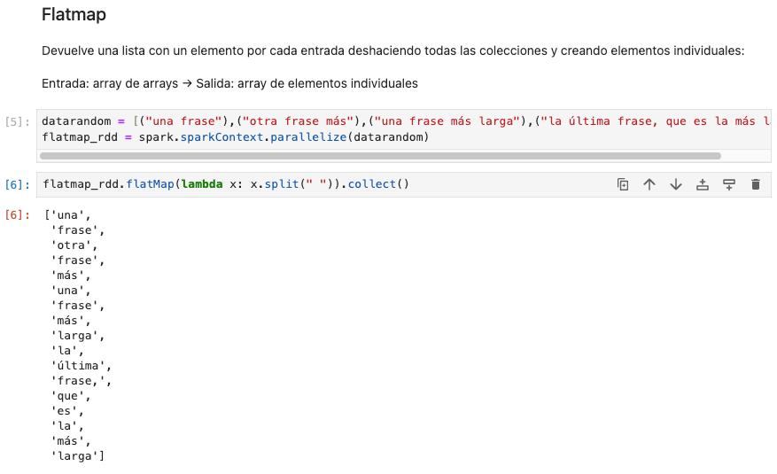
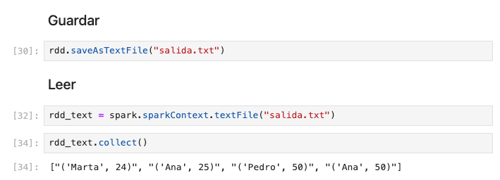

PySpark. Contexto, sesión y RDDs.
Fuentes:
https://aitor-medrano.github.io/iabd/spark/rdd.html
https://spark.apache.org/docs/latest/rdd-programming-guide.html
Hola Spark
Creamos un directorio llamado pyspark
Clonamos el repositorio
https://github.com/josepgarcia/datos.git
cd ## ¿Creamos el directorio en nuestra home?
mkdir pyspark
cd pyspark
git clone https://github.com/josepgarcia/datos.git
Spark se puede ejecutar de diferentes modos:
- Desde la consola (pyspark)
- Desde la creación de un script en python y lanzándolo contra un server spark (spark-submit)
- Un cuaderno jupyter desde docker
- ...
Nosotros utilizaremos la tercera opción. Para trabajar con spark vamos a utilizar jupyther notebook a través de un contenedor docker
Iniciamos la imagen docker y ejecutamos el siguiente código sobre jupyter.
docker run -it -p 8888:8888 -p 4040:4040 -p 4041:4041 -p 4042:4042 -v `(cmd)`:/home/jovyan/work/projects/ jupyter/pyspark-notebook
Creamos nuestro primer programa con spark, vamos a sumar los 100 primeros números naturales.
from pyspark import SparkContext
sc = SparkContext.getOrCreate()
# Creamos un RDD con los 100 primeros números naturales
rdd = sc.parallelize(range(100+1))
# Los sumamos
print("El total es: ",rdd.sum())
https://www.w3schools.com/python/ref_func_range.asp

Crear sesión en Spark
SparkContext es el punto de entrada a Spark desde las versiones 1.x y se utiliza para crear de forma programativa RDD, acumuladores y variables broadcast en el clúster. Desde Spark 2.0, la mayoría de funcionalidades (métodos) disponibles en SparkContext también los están en SparkSession. Su objeto sc está disponible en el spark-shell y se puede crear de forma programativa mediante la clase SparkContext.
Creación de un contexto en Spark
Creación de una sesión en Spark
SparkSession se introdujo en la versión 2.0 y es el punto de entrada para crear RDD, DataFrames y DataSets. El objeto spark se encuentra disponible por defecto en el spark-shell y se puede crear de forma programativa mediante el patrón builder de SparkSession.
from pyspark.sql import SparkSession
# Mínimo para crear una sesión
spark = SparkSession.builder.getOrCreate()
# Con parámetros
spark = SparkSession.builder \
.appName("MyAPP") \
.config("spark.executor.memory","1g") \
.config("spark.sql.shuffle.partitions", "4") \
.getOrCreate()
A través de una sesión podemos obtener un contexto.
from pyspark.sql import SparkSession
spark = SparkSession.builder.getOrCreate()
**sc = spark.sparkContext**
Finalizar
SparkSession vs SparkContext
SparkSession → Trabajo con Dataframes, datasets… proporciona interfaz más simple.
SparkContext → Operaciones de nivel inferior como RDDs, acumuladores…
SparkContext es un singleton y solo se puede crear una vez en una aplicación Spark, mientras que SparkSession se puede crear varias veces dentro de una aplicación.
SparkContext se crea utilizando SparkConf, que permite establecer varias configuraciones de Spark. SparkSession, por otro lado, no tiene un objeto de configuración correspondiente, pero se pueden establecer configuraciones utilizando el método .config de SparkSession.
Hola Spark - webUI
Copiar el siguiente código en jupyter

sc = spark.sparkContext
rdd = sc.textFile("./DATOS/pdi_sales_small.csv")
paisesUnidades = rdd.map(lambda x: (x.split(";")[-1].strip(), x.split(";")[3]))
# Le quitamos el encabezado
header = paisesUnidades.first()
paisesUnidadesSinHeader = paisesUnidades.filter(lambda linea: linea != header)
# Pasamos las unidades a un número entero
paisesUnidadesInt = paisesUnidadesSinHeader.map(lambda x: (x[0], int(x[1])))
# Reducimos por el país y sumamos las unidades
paisesTotalUnidades = paisesUnidadesInt.reduceByKey(lambda a,b: a+b)
paisesTotalUnidades.collect()
# Creamos un RDD de pares con el nombre del país como clave, y una lista con los valores
ventas = rdd.map(lambda x: (x.split(";")[-1].strip(), x.split(";")))
# Quitamos el primer elemento que es el encabezado del CSV
header = paisesUnidades.first()
paisesUnidadesSinHeader = paisesUnidades.filter(lambda linea: linea != header)
# Agrupamos las ventas por nombre del país
paisesAgrupados = ventas.groupByKey()
paisesAgrupados.collect()
Accedemos a la UI
Detenemos spark
RDD
Un RDD (Resilient Distributed Datasets) es una estructura de datos que abstrae los datos para su procesamiento en paralelo.
Antes de Spark 2.0, los RDD eran el interfaz principal para interactuar con los datos.
Se trata de una colección de elementos tolerantes a fallos que son immutables (una vez creados, no se pueden modificar) y diseñados para su procesamiento distribuido. Cada conjunto de datos en los RDD se divide en particiones lógicas, que se pueden calcular en diferentes nodos del clúster.
Hay dos formas de crear un RDD:
- Paralelizando una colección ya existente en nuestra aplicación Spark.
- Referenciando un dataset de un sistema externo como HDFS, HBase, etc...
Sobre los RDD se pueden realizar dos tipos de operaciones:
- Acción: devuelven un valor tras ejecutar una computación sobre el conjunto de datos.
- Transformación: es una operación perezosa que crea un nuevo conjunto de datos a partir de otro RDD/Dataset, tras realizar un filtrado, join, etc...
⚠️ ¿RDD obsoleto?
Antes de la versión 2.0, el principal interfaz para programar en Spark eran los RDD. Tras la versión 2.0, fueron sustituidos por los Dataset, que son RDD fuertemente tipados que además están optimizados a bajo nivel. Aunque el interfaz RDD todavía tiene soporte, sin embargo, se recomienda el uso de los Dataset por su mejor rendimiento. A lo largo de estas sesiones iremos combinando ambos interfaces para conocer las similitudes y diferencias.
Ejemplos
Jupyter (02-RDD.ipynb)

Actions
Acción: devuelven un valor tras ejecutar una computación sobre el conjunto de datos.
A continuación vamos a revisar las acciones más comunes. Puedes consultar todas las acciones disponibles en la documentación oficial:
https://spark.apache.org/docs/latest/rdd-programming-guide.html#actions
| Action | Meaning |
|---|---|
| reduce(func) | Aggregate the elements of the dataset using a function func (which takes two arguments and returns one). The function should be commutative and associative so that it can be computed correctly in parallel. |
| collect() | Return all the elements of the dataset as an array at the driver program. This is usually useful after a filter or other operation that returns a sufficiently small subset of the data. |
| count() | Return the number of elements in the dataset. |
| first() | Return the first element of the dataset (similar to take(1)). |
| take(n) | Return an array with the first n elements of the dataset. |
| takeSample(withReplacement, num, [seed]) | Return an array with a random sample of num elements of the dataset, with or without replacement, optionally pre-specifying a random number generator seed. |
| takeOrdered(n, [ordering]) | Return the first n elements of the RDD using either their natural order or a custom comparator. |
| saveAsTextFile(path) | Write the elements of the dataset as a text file (or set of text files) in a given directory in the local filesystem, HDFS or any other Hadoop-supported file system. Spark will call toString on each element to convert it to a line of text in the file. |
| saveAsSequenceFile(path)(Java and Scala) | Write the elements of the dataset as a Hadoop SequenceFile in a given path in the local filesystem, HDFS or any other Hadoop-supported file system. This is available on RDDs of key-value pairs that implement Hadoop's Writable interface. In Scala, it is also available on types that are implicitly convertible to Writable (Spark includes conversions for basic types like Int, Double, String, etc). |
| saveAsObjectFile(path)(Java and Scala) | Write the elements of the dataset in a simple format using Java serialization, which can then be loaded using SparkContext.objectFile(). |
| countByKey() | Only available on RDDs of type (K, V). Returns a hashmap of (K, Int) pairs with the count of each key. |
| foreach(func) | Run a function func on each element of the dataset. This is usually done for side effects such as updating an Accumulator or interacting with external storage systems.Note: modifying variables other than Accumulators outside of the foreach() may result in undefined behavior. See Understanding closures for more details. |

Transformations
Transformación: es una operación perezosa que crea un nuevo conjunto de datos a partir de otro RDD/Dataset, tras realizar un filtrado, join, etc…
Una transformación no se “ejecuta” hasta que se realiza una acción sobre ella.

flatMap
Devuelve una lista con un elemento por cada entrada deshaciendo todas las colecciones y creando elementos individuales:
Entrada: array de arrays → Salida: array de elementos individuales

Guardar y leer RDDs

Cerramos sesión spark
Ejercicios RDDs
⚠️ Creamos un RDD con los distintos datos
-
Filtra los elementos pares del siguiente listado
-
Multiplica los elementos (todos entre sí).
-
Ordenar de mayor a menor y de menor a mayor
- Calcula el promedio de una lista de números
- Duplica los elementos de una lista
- Cuenta la longitud de cada palabra
- Contar las palabras únicas de un fichero y el número de ocurrencias (números, espacios, tabs, etc… no deben ser contados).
Las palabras deben ser case-insensitive (Hola y hola son la misma palabra)
PASOS:
- Dividir en palabras
- Asignar el valor 1 a cada palabra
- [(hola, 1), (adios, 1), (dentro,1)….]
- reduceByKey